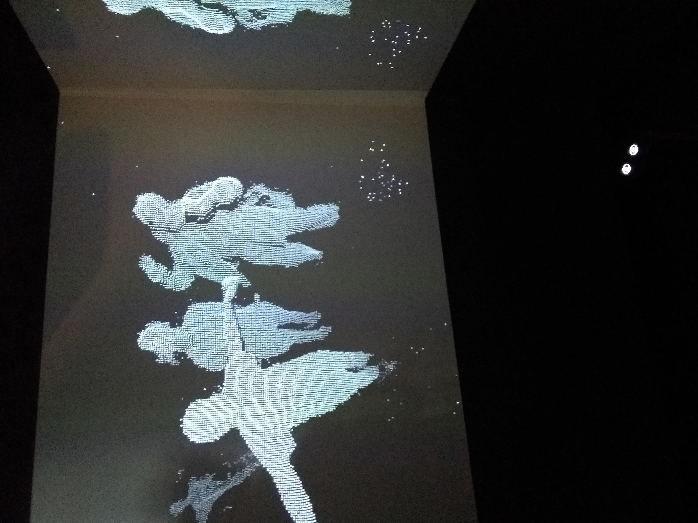
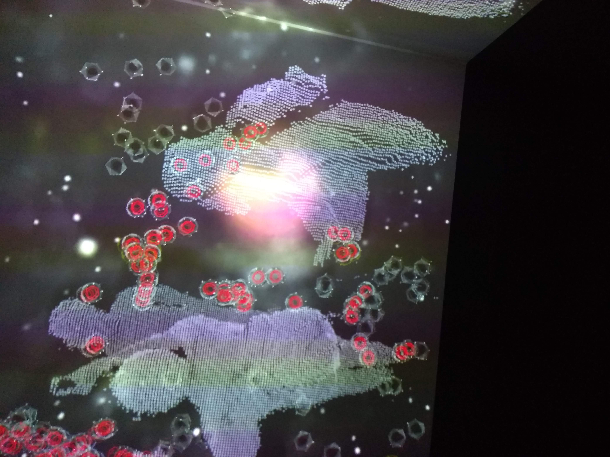
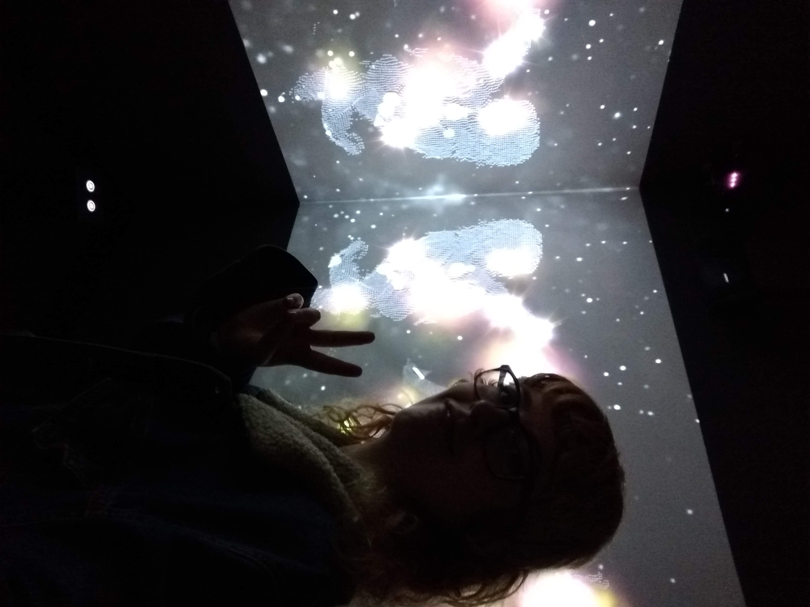

The whole class went on an excursion to Science Center NEMO in Amsterdam. I’ve been to this museum before and it’s always been fun, so I was excited. NEMO is a museum for children, so we were not the target group. However, some of the exhibits apply technologies that we’ve been studying for the past couple of weeks. It was fun to see these techniques and theory in action.
An exhibit that I enjoyed a lot was called Building Blocks from Space. It was about the big bang, the origin of atoms and the fact that everything around us, including ourselves, is made of them. The many different kinds of atoms that exist together form the building blocks of life as we know it.
The exhibition lasts for three minutes. It takes place inside of a small dark space with screens all around. A narrator tells a story about the big bang and atoms while crazy visuals appear and upbeat music plays. Included in the visuals is your own body, consisting of lots of tiny white spheres.
The experiences uses body tracking to create these visuals. If you look closely, you can see that an Xbox Kinect is used for this. Discovering that was fun, because the first thing I think of when thinking of the Kinect is as an outdated gaming accessory. When doing some quick research, I learned that the Kinect was discontinued as a gaming device but it is still used in developing. And, apparently, for body tracking purposes in museums.
I found this exhibition interesting because I think body tracking is a versatile technology that can be used in many creative ways. And, let’s be honest, it’s always fun to see yourself act silly on a screen.